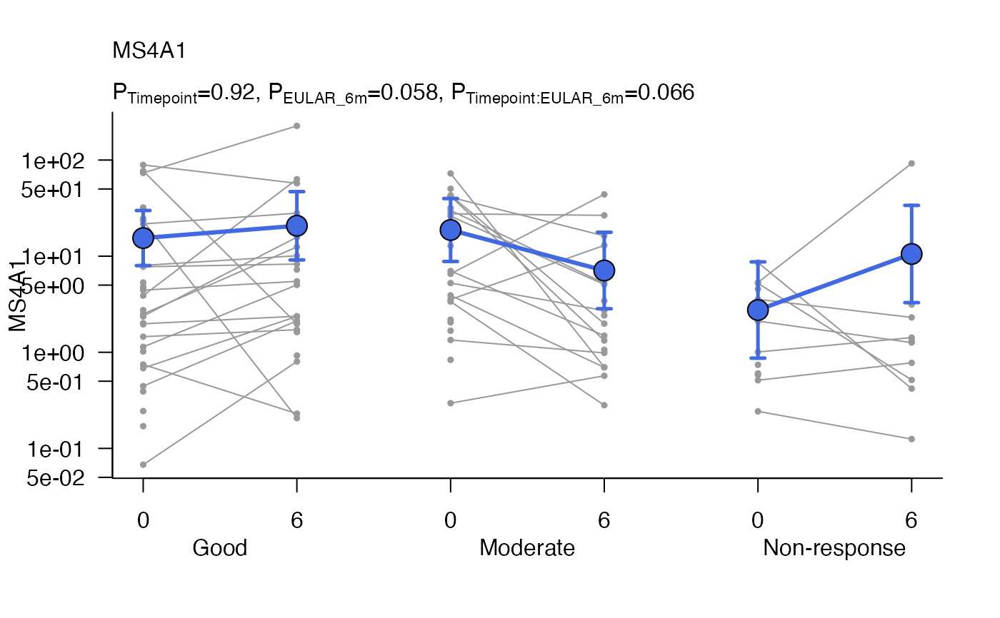

Plot to show differences between groups over time using base graphics.
Usage
modelPlot(
object,
geneName = NULL,
x1var = NULL,
x2var = NULL,
x2shift = NULL,
xlab = NA,
ylab = geneName,
plab = NULL,
title = geneName,
logTransform = is(object, "GlmmSeq"),
shapes = 21,
colours = "grey60",
lineColours = "grey60",
markerSize = 0.5,
fontSize = NULL,
alpha = 0.7,
addModel = TRUE,
addPoints = TRUE,
modelSize = 2,
modelColours = "royalblue",
modelLineSize = 1,
modelLineColours = modelColours,
errorBarLwd = 2.5,
errorBarLength = 0.05,
...
)Arguments
- object
A glmmSeq/lmmSeq object created by
glmmSeq::glmmSeq()orglmmSeq::lmmSeq()- geneName
The gene/row name to be plotted
- x1var
The name of the first (inner) x parameter, typically 'time'. This is anticipated to have different values when matched by ID.
- x2var
The name of an optional second (outer) x parameter, which should be a factor.
- x2shift
Amount to shift along x axis for each level of
x2var. By default the function will arrange each level ofx2varside by side. Lower values ofx2shiftorx2shift = 0can be used to overlap plots similar to 'dodge' or stagger them.- xlab
Title for the x axis
- ylab
Title for the y axis
- plab
Optional character vector of labels for p-values. These must align with column names in
object@stats$pvals.- title
Plot title. If NULL gene name is used
- logTransform
Whether to perform a log10 transform on the y axis
- shapes
The marker shapes (default=19)
- colours
The marker colours (default='red') as vector or named vector
- lineColours
The line colours (default='grey60') as vector or named vector
- markerSize
Size of markers (default=2)
- fontSize
Plot font size
- alpha
Line and marker opacity (default=0.7)
- addModel
Whether to add the fit model with markers (default=TRUE)
- addPoints
Whether to add underlying data points (default=TRUE)
- modelSize
Size of model points (default=2)
- modelColours
Colour of model fit markers (default="black") as vector or named vector
- modelLineSize
Size of model points (default=1) as vector or named vector
- modelLineColours
Colour of model fit lines.
- errorBarLwd
Line width of error bars
- errorBarLength
Head width of error bars
- ...
Other parameters to pass to
graphics::plot()
Examples
data(PEAC_minimal_load)
disp <- apply(tpm, 1, function(x){
(var(x, na.rm=TRUE)-mean(x, na.rm=TRUE))/(mean(x, na.rm=TRUE)**2)
})
MS4A1glmm <- glmmSeq(~ Timepoint * EULAR_6m + (1 | PATID),
countdata = tpm[1:2, ],
metadata = metadata,
dispersion = disp)
#>
#> n = 123 samples, 82 individuals
#> Time difference of 0.1045921 secs
modelPlot(object=MS4A1glmm,
geneName = 'MS4A1',
x1var = 'Timepoint',
x2var='EULAR_6m')
